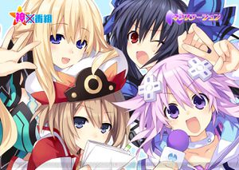
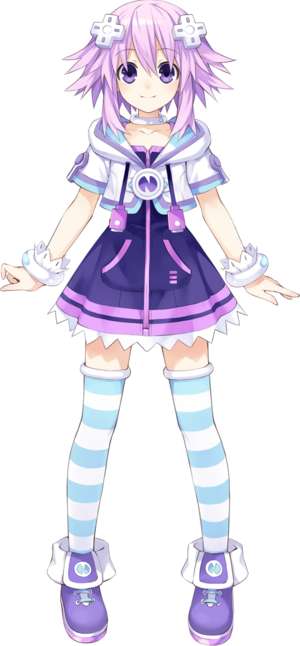
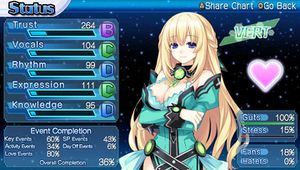

Hyperdimension Neptunia
 De: La Frikipedia, la enciclopedia extremadamente seria.
De: La Frikipedia, la enciclopedia extremadamente seria.

|
ATENCIÓN
El autor de este artículo se ha olvidado de enlazar otros artículos y ha perpetrado un Deadend.
Hay que editar el artículo para que enlace a otros artículos.
|

|
ATENCIÓN
Este artículo contiene demasiados tachones y en vez de provocar gracia, parece los apuntes de un niño de preescolar. Ya puede ser porque el autor es un novato, bien es un topo sin vista, o simplemente algún n00b que se cree que abusar del chiste mierdoso mola y no se da cuenta que jode bastante el artículo. Así que coge la goma de borrar y discusión del artículo, puede que te ayude en algo.
|
De la serie Videojuegos:
Hyperdimension Neptunia

A punto de hacer una escena yuri.
| Desarrollado por:
|
Factoría de Ideas (no es coña).
|
| Distribuido por:
|
El Top Manta más cercano.
|
| Diseñado por:
|
Alguno de allí.
|
| Motor
|
Motor L28 a gasofa.
|
| Género(s)
|
Meter leches por turnos y búsqueda de porno tesoros.
|
| Fecha de lanzamiento:
|
Lanzado desde un avión
|
| Modos de juego:
|
New game, Continue, Install data y Options.
|
| Requisitos:
|
ser alguien que le gusta mucho las niñas
|
| Disponible en:
|
Siempre... y nunca
|
| Formatos:
|
DVD-R
|
| Edades:
|
Los que ya le gustan las tetas.
|
| Puntuaciones:
|
Mucha.
|
Tetas, tetas everywhere.
«¡Soy la protagonista de protagonistas!»
~ Neptune mintiendo como mejor sabe.
«...»
~ Tu apenas iniciando el juego.
«Fotógrafoooo...¿Dónde estaaas?»
~ Vert Intentando violar a cualquier tío con una cámara.
«¿Soul-Sword?, ¡Ah, te refieres a Soul Eat*r!»
~ Neptune haciendo publicidad de animes en una conversación.
Hyperdimension Neptunia es producto de unos pedófilos y pervertidos de una compañia llamada Toei Animation Idea Factory (que original, por dios), Compile Heart (un distribuidor desconocido que tambien vende erizos azules). Esta ambientada en una época mu lejana, en un universo mu lejano al nuestro, en el que las consolas son dioses y tienen forma de mujer. Lo más extraño es que se pueden meter discos igualmente Será por el culo.
Historia
Trata sobre la guerra de prostitutas por la calle del cortejo de consolas en el que se divide en 4 bares de estriptis ciudades:
- Planeptune (Putas Purpuras): Representa a... ni idea, encabezado por Neptune.
- Leanbox (Putas verdes): Representa a Equisbox360 de Microchof, encabezado por Vert (y sus 2 peazo melones).
- Lowee (Putas blancas por... ya tu sabeh a.a): Representa a la Noentiendo GÜI, encabezado por Blanc.
- Lastation (Putas Negras - A.k.A las baratas que tienen sida) : Representa la Peesetrés de Choni (Esa era fácil), encabezado por la tsundere de Noire.
Pues estas cuatro diosas hacen un pacto de no tocar nosequécosa porque parte del juego son TODO conversaciones, aunque hay un precioso botón que acelerará las cosas y después de 34545677564323435687765442 horas 30 segundos saltando la conversación nos sumergimos a un precioso mundo de sueños y sexo. Después de sellar el trato con sus almas aparece un personaje llamado R4 (en inglés, simplemente plagiaron el nombre de la tarjeta pirata de la DS) que siempre intenta violar hacer que las ciudades entren en guerra o destruir a las diosas, pero como es mala y siempre ganan los buenos, se jode. A lo largo del juego se nos presentaran en ocasiones imagenes hentai ecchi que le pondrán a más de uno palote.
Personajes
Los buenos
- Neptune: Esta se toma cada mañana 20 tazas de café, lo que le provoca una hiperactividad de tres pares de c0jones. Se dedica a recibir todo el protagonismo y j0der la existencia a la mayoría de personajes y hablar y hablar hasta que te cuelgues en una cuerda y pongas fin a tu sufrimiento. En su forma
Super Sayan adulta le clavan morfina o se fuma un porro y se vuelve una persona de carácter normal (gracias a dios) y le crecen las tetas. Es diosa de Planeptune y favorita de los pedófilos.
- Nepgear: Hermana de Neptune, es quien aguanta las memeces de esta. No se sabe como no se ha suicidado aún a cuenta de Neptune. Esta es todo lo contrario de su hermana, es educada, se bebe una sola taza de café al día, no es vaga, y muchas cualidades buenas más... En su forma adulta es igual, solo que con un traje más erótico.
- Vert: La pechugona del grupo y más friki de todas se dedica todo el día a los juegos online y deja que su cuidad sea invadida por jebis, canis, chinos y demás criaturas fantasticas y no tanto. Siempre tiene cara de haberse fumado un pequeño canuto y es amable
y guarra con las demás. En su forma adulta tiene más pechonalidad y es más seria que Sheldon Cooper sobre su asiento en el sófa. Es diosa de Leanbox. ¿He mencionado sobre sus tetas?
- Noire: La tsundere del grupo que siempre está cabreada con Neptune (y con razón...), es otra de las que se dejarían atropellar con un coche
si hubiera allí. Suele tener buen carácter, pero cuando llega Neptune se le bajan los ánimos hasta el punto de ser emo. En su forma adulta le pintan el pelo a uno canoso (ya se hace vieja). Tiene una hermana más animada llamada Uni.
 Todas las diosas presentando
el porno de madrugada las noticias.
- Blanc
o y negro: Diosa de Lowee que se las pasa leyendo, siendo jorobada por Neptune o sus hermanas Rom y Ram (originalidad por un tubo) o pelearse con alguien por meterse con su pechonalidad que es la misma que nada. Suele ir siempre seria y apenas sonríe, aunque hay pruebas de que se ha descojonado con La hora de José Mota, Muchachada Nui y Padre de Familia. En su forma demoníaca adulta tiene el pelo canoso y las mismas tetas.
- Plutia: Es la Neptune de un universo alternativo, solo que cada 2 por 3 se hecha una siesta de casi todo el día, por lo que no tiene nada de hiperactividad. En su forma adulta se vuelve una
P*TA LUNÁTICA QUE NOS MATARÁ A TODOS hardcore que le gusta el dolor de los demás.
 Esta es el puro retrato de desesperación y de la muerte (y de conversaciones laaaaaaaaaaaargas).
Los malos malosos (mu malos)
De momento solo he encontrado ha 3 malos a los que destacar, los demás son lesbianas secundarios o no me acuerdo de ellos.
- Arfoire: o R4 en espiñol es una tía con apariencia de
prosti bruja que se dedica a exterminar a las demás diosas. No importa cuantas veces falle, SIEMPRE VUELVE LA MUY CANSINA.
Pikachu Pirachu: Una rata de alcantarilla que acompaña a la bruja y a uno más. Nunca se mete en los aburridos y sosos emocionantes y entretenidos combates de las diosas contra R4, y se le pone la cola tiesa cuando le sueltan un piropo (no se si es la de delante o la de atras). se dice que es un Pichu negro con el nombre de Pikachu cambiando la k, pero Idea Factory dice que nunca a visto al bichejo ese y que no lo conocen.
- Mister Badd (no, no lo he escrito mal): el único personaje masculino es un viejo chochete que hace lo mismo que la R4 esa.
y ahora los que no sobresalen para nada:
Abnes Skinner: Madre del director del colegio de primaria de Springfield, Seymur Skinner Es una niña que tiene un papel más que secundario (se dije que ni la querían de papel higiénico, pero la metieron en el juego por pena y unas mamadas. Tiene aspecto de loli.
CopyPaste (Copiaypega en espiñol de espiña, Tacosconchili en latinoamerica): Es otro con papel secundario, pero al menos le meten en las peleas. Tiene un gran orgullo que siempre se lo pisotean las diosas y se le rellena más rápido que un vaso de hagua.
Problemas con la versión española y molestias durante el juego
El principal problema del juego es que no esta en español (solo la caratula) y Neptune habla como Big Smoke, Ryder, CJ y cualquier otro negro diciendo cosas como "dayumn, cuz', nigga" entre otros, en algunos puntos pierdes la conversación, cada vez que saltas se ponen a gritar "JUMP-PU" por lo que tienes otra razón para intentar dejarte sordo o pensar "¡¡KAWAIIIII!!", dependiendo de los gustos del pene consumidor (aunque se le pueden quitar las voces). Otro problema es que si tu madre o tu padre te ve jugando (si eres Tomoki Sakurai, o un pervertido que es lo mismo), pensaran cosas mu raras, aunque esta muy bien visto por los otakus del mundo, tus amigos "normales" lo verán más raro todavía y te entrarán más ganas de devolver el juego (yo ya me lo he pasado varias veces y me visto hasta Jebús) pero eso es otra historia. El último problema es que no podremos ver las tetas de Vert al aire, lo que hace que las busquemos en gugle y no sean dibujadas por el mismo demente dibujante del juego (que por cierto, en las conversaciones los personajes se pueden ver a los personajes respirando y moviendose, lo que le da un movimiento más realista a los personajes).
 Esta es Vert, ¿a que tiene una buena delantera, eh?
Sagas de Hyperdimension Neptunia
- Hyperdimension Neptunia
- Hyperdimension Neptunia MK2
- Hyperdimension Neptunia Victory (Lo tengo)
Hyperdimension Netuinia Fiesta en el puticlub- Hyperdimension Neptunia PP (Lo Tengo)
- Hyperdimension Neptunia Victory 2
- Hyperdimension Neptunia ReBirth (Lo tengo, es un remake del primero solo que renovado del todo)
- Hyperdimension Neptunia ReBirth 2 (Proximamente, remake del segundo juego, disponible el 28 de enero del próximo ano, si he dicho ano, no año, ¿contento?)

También hay un anime, pero no es NADA ECCHI.
Acogida entre los frikis y otakus
El juego fue quemado, fumado, escupido, lanzado, disparado, etc muy buen acogido en Otakulandia, Estamos Jodidos Estados Unidos, algún Español y mi casa, ya que estaba cargado de hentai tenia una historia muy entretenida y estaba muy bien, tanto en aspecto gráfico como en las tetas de Vert diseño de los personajes.
Hyperdimension Neptunia: Producing Porn Perfection
Esta fue su primera entrega en la que cambiaban el género del juego por otro más cancerígeno original. En este las cuatro se quedan sin leros energía por culpa de un grupo de chinos y sus bazares música y para no robarles la energía, se proponen a convertirse en idols, pero como no tienen productor se j*den y mueren llaman a un friki de los videojuegos, osea, tu. En este juego tendrás que violar a todas y cada una de ellas convertirlas en la nueva sensación j-pop en menos de 180 días. El juego es más fácil que ser actor porno ser médico y luego revender el juego al GAME, en donde te darán una miseria por el. Por otra parte el juego es más corto que las venas de un emo rajadas, aunque si quieres conseguir todos los finales tendrás que olerle el culo a Neptune hacer varias partidas con las 4 diosas. Por último y lo más importante de todo es que podemos ver a Bin Laden escribiendo cartas bomba a la Casa Blanca las 4 diosas en bolas y cumplimos unos requisitos (por eso lo compré).
¿Sabias que...
- Si quieres hacer una sesión fotográfica con Vert, esta estará más que encantada pero no te soltará hasta que a ella le parezca bien?
- Blanc tiene muy mala leche asi que no hables de sus tetas o te meterá una leche con su mazo
plagiado del Donkey Kong original?
- Las voces en inglés dan ganas de tirarse por la ventana?
- Abnes apareció en Los Simpson solo que más vieja y con un hijo
bastardo que es el director del colegio de Bart y Lisa?
- Sonic el puercoespín le dió el visto bueno a este juego?
- Cuando las protas se transforman en su forma adulta se llaman HDD y cambian sus nombres a (color) Heart Ejemplo: Neptune- Purple Heart (
¿Pero c0ño a quién le importa a eso?, ¡Queremos tetas!)?¿Y que también estan más desarrolladas (Tu ya me entiendes...)?
- He cambiado las letras de los tacos por números y asteriscos para evitar la censura?
- A mi me gusta este juego?
- A ti también?
- A todos les gustan las tetas de Vert?
- Es un RPG?
- He mencionado las tetas de Vert?
- Si te pones delante de un espejo y dices Vert 3 veces aparecerá por detras y hundirá tu cara en sus tetas?¿Y luego podrás hacer más cosas en tu cuarto?
- Si te pones delante del espejo pero diciendo Neptune 3 veces aparecerá y hablará para siempre hasta que te suicides?
- Solo hay un varón en todo el juego?
|
|
 Shooter Shooter
 Terror Terror
 Velocidad Velocidad
 Rol Rol
 Estrategia Estrategia
 Aventuras Aventuras
 Fight! Fight!
 Clásicos Clásicos
 Deportivos Deportivos
 Aventura gráfica Aventura gráfica
 Novela visual Novela visual
 Personajes de videojuegos Personajes de videojuegos
|
Frikipedia 2005-2016, Licencia
GFDL 1.2 - Extraído por FrikiLeaks